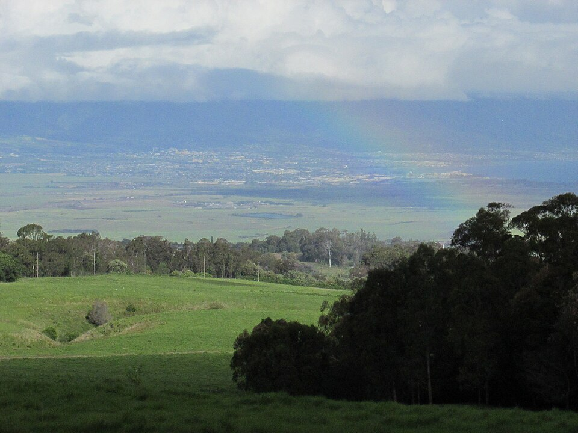

Olinda
Place: Olinda, Maui
Type: Community / ranching district / conservation landscape
Story it tells: A high-elevation Maui community whose name likely emerged from Portuguese settlers and ranchers, while its landscape reflects the intersection of ranching, forestry, conservation, and Haleakalā's changing forests.

Olinda is a small community located above Makawao on the northern slopes of Haleakalā. Stretching from roughly 1,800 to more than 4,000 feet in elevation, the area is known for cool temperatures, rolling pastures, forests, and sweeping views across Maui's central valley and north shore.
The origin of the name is generally linked to Portuguese settlers who arrived in Hawaiʻi during the plantation era. Many believe the name came from the phrase “ó linda” (“oh beautiful”) or “o linda vista” (“beautiful view”). The name is often attributed to Samuel Thomas Alexander, who reportedly admired the scenery while developing lands on the slopes of Haleakalā during the late nineteenth century. The Portuguese influence reflects the growing presence of immigrant families who settled throughout Upcountry Maui to work on ranches, dairies, and plantations.
Before the arrival of Westerners, this region formed part of Maui's upper native forest belt. Dense koa, ʻōhiʻa lehua, māmane, and tree fern forests covered much of the mountainside. In traditional Hawaiian land use, these upland forests were considered part of the wao akua, the realm of the gods. Rather than permanent settlement, the area was used by specialists gathering resources such as canoe-quality koa wood, bird feathers for chiefly garments, and other materials found only in the mountain forests.
By the nineteenth century, introduced cattle, logging, and expanding ranch operations dramatically altered the landscape. Large portions of the native forest were cleared, creating the open pasturelands that now characterize much of Upcountry Maui. Ranching became deeply tied to the region's identity, and Olinda eventually became closely associated with both Maui's paniolo traditions and the broader ranching economy of Haleakalā Ranch.
One of the area's most important operations was Haleakalā Dairy, established in 1896. For more than a century the dairy served Maui communities from its headquarters in Olinda. In 1971, food consultant Mary Soon developed a blend of passion fruit, orange, and guava juice for Haleakalā Dairy. The drink became known as POG and later inspired the popular milk-cap collecting game that captivated young children all over Hawaiʻi and beyond.
Today ranches, homes, schools, and forest reserves define the community, however, it has also become a center for conservation. Facilities in the upper slopes support efforts to preserve some of Hawaiʻi's rarest plants and birds, including the ʻalalā, kiwikiu, and ʻakohekohe. Scientists working in the area are helping prevent the loss of species found nowhere else on Earth.
Olinda's name may have arrived from another language, but the story of the place is distinctly Hawaiian. Its forests, ranches, conservation projects, and mountain views reveal how the slopes of Haleakalā have continually changed while remaining connected to the natural and cultural history of Maui.